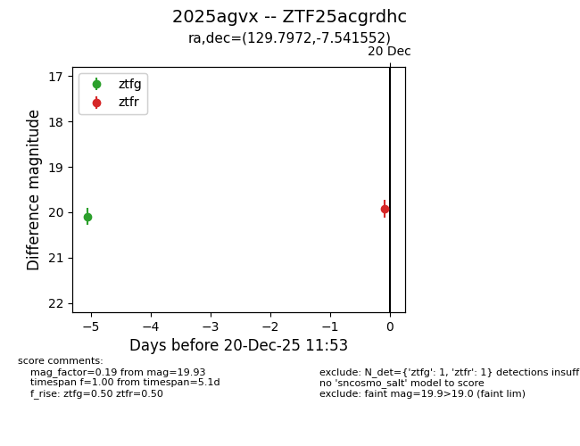
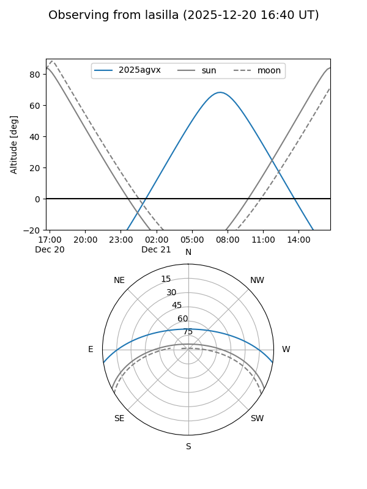
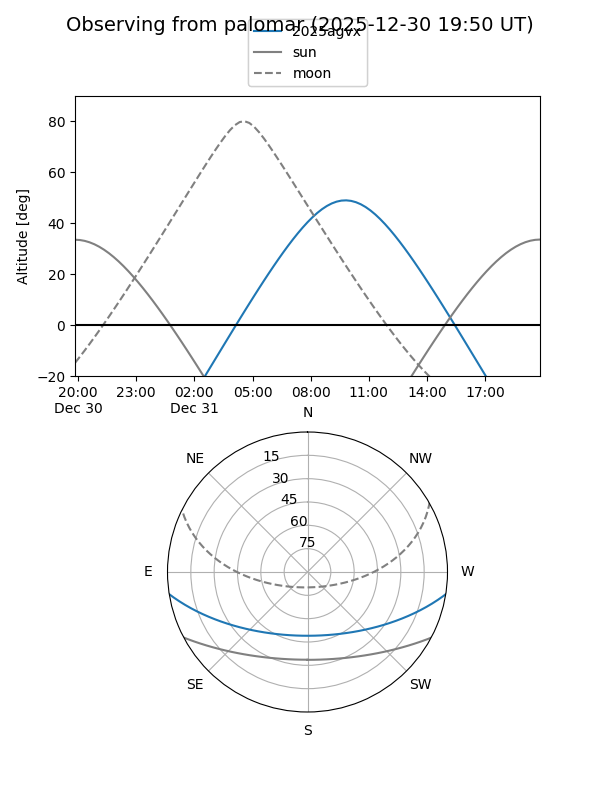

2025agvx
Target 2025agvx at 2025-12-20 11:54
Aliases and brokers:
FINK: fink-portal.org/ZTF25acgrdhc
Lasair: lasair-ztf.lsst.ac.uk/objects/ZTF25acgrdhc
ALeRCE: alerce.online/object/ZTF25acgrdhc
TNS: wis-tns.org/object/2025agvx
YSE: ziggy.ucolick.org/yse/transient_detail/2025agvx
alt names
ZTF25acgrdhc (ztf,fink_ztf)
2025agvx (tns,yse)
Coordinates:
equatorial (ra, dec) = 129.7972,-7.54155
equatorial (HMS+DMS) = 08:39:11.33,-07:32:29.59
galactic (l, b) = (232.9272,+19.86777)
Flags:
Photometry:
last ztfg=20.09, ztfr=19.93
1 ztfg, 1 ztfr detections
Lightcurve

Visibility


Additional plots